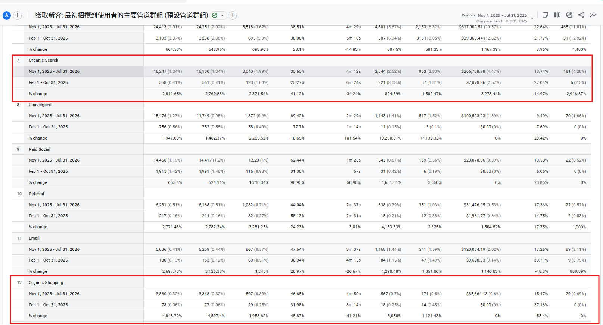
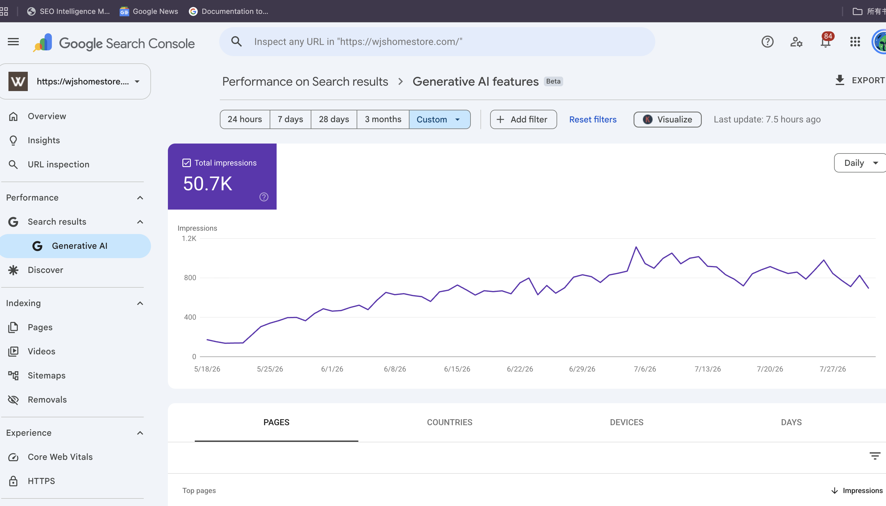
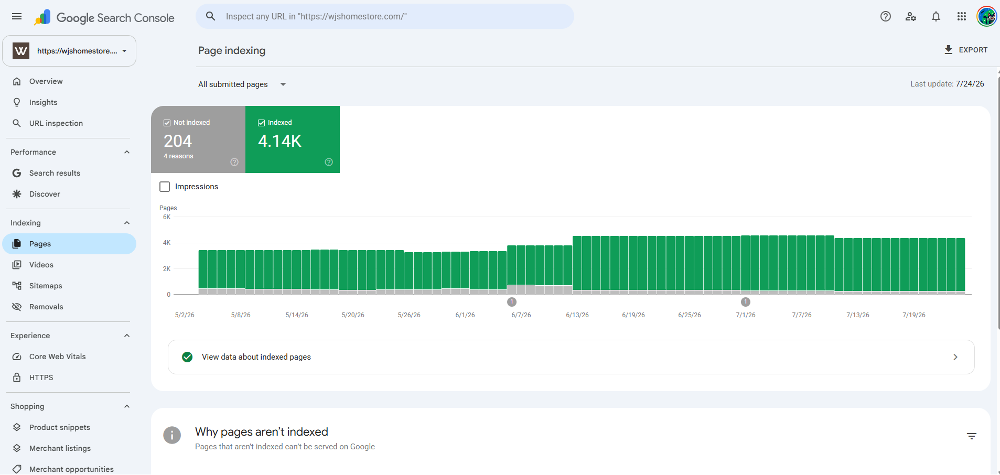
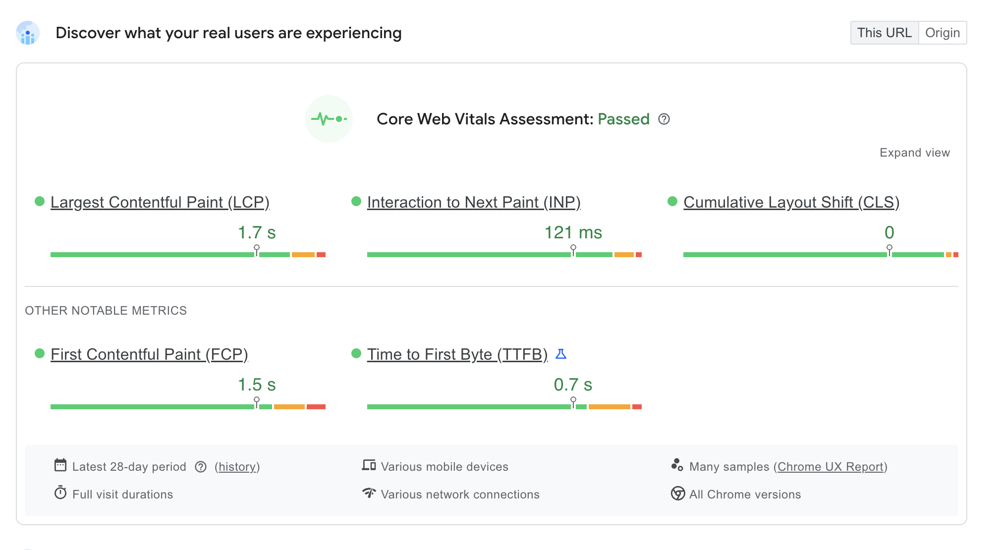

E-commerce SEO for organic revenue and product discovery.
面向自然搜索收入和产品发现的电商 SEO 案例。
For WJS Home, I worked on a full-funnel e-commerce SEO system that connected Shopify technical SEO, content strategy, product discovery, authority building, and revenue tracking. After a major organic visibility decline, I reviewed affected page patterns, re-planned page roles, refreshed content, and helped daily GSC clicks recover from single digits to approximately 100.
在 WJS Home 项目中，我围绕 Shopify 电商网站搭建 SEO 增长体系，把技术 SEO、内容策略、产品发现、站外权威建设和收入复盘连接起来。在自然搜索可见度大幅下降后，我分析受影响页面、重新规划页面角色并更新内容，帮助 GSC 日均点击从个位数恢复至约 100 次。
Strategy & Execution
策略与执行
- Clarified the role of each page type, including blogs, collection pages, product pages, trust pages, and revenue-driving pages.
- Improved website content structure so users could move from information search to product discovery and purchase.
- Optimized collection pages and selected product pages with keyword-based naming, titles, descriptions, copy, images, and internal links.
- Audited indexation, crawlability, sitemap, canonical, redirects, duplicate content, schema, Core Web Vitals, and Shopify SEO issues.
- Reviewed technical findings, prioritized issues, and communicated implementation needs with developers.
- Built backlinks, short-form content, and PR-style content to strengthen authority, brand exposure, and referral traffic.
- Responded to a major organic visibility decline by reviewing affected content patterns, refining page roles, and helping daily GSC clicks return to approximately 100.
- 明确博客、集合页、产品页、信任页和收入页面在网站中的角色和责任。
- 优化网站内容结构，让用户能从信息搜索自然进入产品发现和购买路径。
- 优化集合页和部分产品页，包括关键词命名、标题、描述、页面文案、图片和内链。
- 审计收录、抓取、sitemap、canonical、redirect、重复内容、schema、Core Web Vitals 和 Shopify SEO 问题。
- 评估技术检测结果，整理优先级，并与开发沟通落地。
- 通过外链文章、短文和 PR 类型内容增强网站 authority、品牌曝光和自然流量。
- 在自然搜索可见度大幅下降后，排查受影响内容模式、细化页面角色，并帮助 GSC 日均点击恢复至约 100 次。
The project also reached 50.7K GSC Generative AI impressions and passed Core Web Vitals assessment.
项目也获得了 50.7K GSC Generative AI impressions，并通过 Core Web Vitals 评估。




